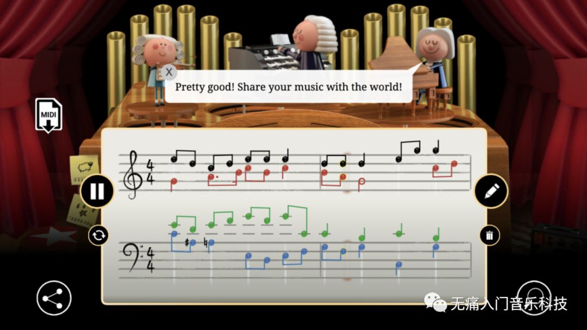
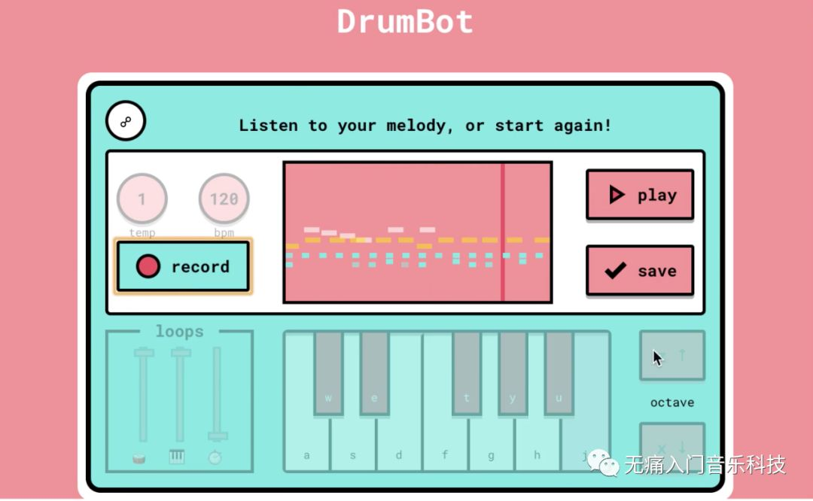

「INFO」2019年度那些亮眼的音乐科技成就
简单盘点一下，2019年音乐科技方面令博主印象深刻的学术研究！个人眼界有限，如有勘误或遗漏，还请包涵！
过去的一年里，深度学习继续在传统的音乐信息检索任务上做优化，并且开源了许多“已经训练好”的大模型，同时出现了更多高质量的新数据集。本文将在以下几个方面做简要总结：
-
传统任务：音高判定/节拍追踪/和弦识别/翻唱检测
-
音乐其他方面的数据分析
-
声源分离：歌曲分离为人声及其伴奏
-
自动标注：声音事件和音乐标签
-
智能生成：自动伴奏
-
造福大众的新数据集
P.S. 往期回顾 - 2018年的音乐科技年度总结
『传统任务』
♬ 音高判定 ♬
☞ 还记得18年总结里提到的由Jong Wook Kim等人提出的单旋律音高识别CREPE么？一作小哥在19年ISMIR会议上发表了一篇钢琴复音识别的文章，优化了18年总结中提到的Onsets and Frames模型。另外，他也从纽约大学MARL科研组博士毕业了，论文题目是Automatic Music Transcription in the Deep Learning Era。
➥ http://archives.ismir.net/ismir2019/paper/000081.pdf
➥ https://github.com/jongwook/dissertation
☞ Google Research团队在单旋律音高识别上又进一步，开发了比全监督式模型CREPE表现更好的自监督式模型SPICE。
➥ https://arxiv.org/pdf/1910.11664.pdf
☞ 不管是单音还是复音，总归是有音高的，但是如何对打击乐这种类型的乐器进行自动扒谱呢？师哥Keunwoo Choi的这篇文章用非监督学习的方式给出一个答案。
➥ https://github.com/keunwoochoi/DrummerNet
♬ 节拍追踪 ♬
维也纳OFAI的Sebastian Böck可以说是研究这个问题的资深专家了，他最新的工作是用多任务学习的方式，同时提升tempo estimation和beat tracking。
➥ http://archives.ismir.net/ismir2019/paper/000058.pdf
➥ 训练好的模型开源在https://github.com/CPJKU/madmom
♬ 和弦识别 ♬
☞ 为了深度学习出输入数据中的时序信息，注意力模型(attention-based model)是最近比RNN和LSTM更流行的方法，台湾中央研究院的Tsung-Ping Chen和Li Su将其应用在和弦识别上，并获得了19年ISMIR的最佳论文之一。
➥ https://github.com/Tsung-Ping/Harmony-Transformer
☞ 想详细了解近20年和弦识别的发展，不要错过这篇C4DM的同事们发表的综述。
➥ http://archives.ismir.net/ismir2019/paper/000004.pdf
♬ 翻唱检测 ♬
除了直接训练端到端的模型去解决一个特定任务，也可以从任务A的模型中提取embedding，应用到任务B中。比如从“主旋律识别任务”的模型中提取embedding，能成功地被应用到翻唱检测的任务中，毕竟原歌曲和其翻唱版本之间的主旋律应该还挺相似的。法国的Guillaume Doras和Geoffroy Peeters就用这个方法实现了目前准确度最高的翻唱检测算法。
➥ http://archives.ismir.net/ismir2019/paper/000010.pdf
『音乐其他方面的数据分析』
以上传统任务的亮眼成就列举，难免让其他领域的人觉得这不过又是CS大行业的一个音乐分支，其实音乐信息检索这一行充满了统计学家和音乐家。
☞ 比如说近20年来用户或算法创建的歌单，通过统计学的方法能反映出哪些信息和变化趋势？巴塞罗那MTG组的Lorenzo Porcaro和Emilia Gómez就发表了这么一篇文章。
➥ https://github.com/MTG/playlists-stat-analysis
☞ 音乐除了基本的音高节奏等元素，更包含了器乐演奏家在表演时的各种“参数”。佐治亚理工的Alexander Lerch等人发表了关于音乐表演分析综述文章。
➥ http://archives.ismir.net/ismir2019/paper/000002.pdf
☞ 除了音乐本乐，承载它的交互方式在“让用户发现好音乐”的过程中功不可没，Peter Knees、Markus Schedl和Masataka Goto三位大前辈发表的这篇综述里回顾了过去20年的技术历程。
➥ http://archives.ismir.net/ismir2019/paper/000003.pdf
『声源分离』
19年的声源分离尤其是在“把输入音频里的人声与伴奏分离开”这项任务上，仿佛被开了光…这要部分归功于相关数据集和指导材料从18年开始被各种大公开，这里必须感谢法国INRIA的Antoine Liutkus和Fabian-Robert Stöter两位老师的无私贡献。
☞ Deezer公司开源的spleeter，目前在Github上已经9千多星，亲测好用。
➥ https://github.com/deezer/spleeter
☞ Facebook Research紧随其后开源demucs，相比于以音频的时频谱做输入的spleeter，这个直接从音频波形下手。
➥ https://github.com/facebookresearch/demucs
『自动标注』
☞ 18年总结中提到的Jordi Pons，从MTG顺利博士毕业了，他的毕业论文是Deep neural networks for music and audio tagging。
➥ PPT：http://www.jordipons.me/media/ThesisDefense_JordiPons.pdf
➥ 论文：http://jordipons.me/media/PhDThesisJordiPons.pdf
☞ 针对于更广义的音频事件检测，我的朋友孔秋强在萨利大学博士毕业了，他不仅论文发得多多多，代码写得也特别清晰明了。在毕业论文最终上线之前，可以先在他的个人主页浏览所有相关工作。
➥ https://qiuqiangkong.github.io/
『智能生成』
其实博主对自动作曲算法本身的关注比较少，所以只对demo做得比较漂亮的两个自动伴奏项目印象深刻。
☞ The Bach Doodle，博主崇拜的Cheng-Zhi Anna Huang等人做出的工作，用户输入一段主旋律（下图黑色音符部分），系统可以自动编排巴赫风格的和声伴奏（下图其他颜色的音符），这项工作也发表在19年ISMIR上。
➥ http://archives.ismir.net/ismir2019/paper/000097.pdf

☞ DrumBot，这里自动伴奏的不再是旋律，而是鼓点。背后基于的GrooVAE算法已经发表在19年ICML上，嗯对，又是Magenta开发的。
➥ https://arxiv.org/pdf/1905.06118.pdf

☞ 对自动作曲算法本身感兴趣的，可以参考19年ISMIR上楊奕軒老师的Tutorial: Generating Music with GANs
➥ https://salu133445.github.io/ismir2019tutorial/
『新数据集』
☞ The MTG-Jamendo Dataset for Automatic Music Tagging
➥ https://mtg.github.io/mtg-jamendo-dataset/
☞ Da-TACOS: A Dataset for Cover Song Identification and Understanding
➥ https://mtg.github.io/da-tacos/
☞ The AcousticBrainz Genre Dataset: Multi-Source, Multi-Level, Multi-Label, and Large-Scale
➥ https://mtg.github.io/acousticbrainz-genre-dataset/
☞ The Harmonix Set: Beats, Downbeats, and Functional Segment Annotations of Western Popular Music
➥ https://github.com/urinieto/harmonixset
☞ SUPRA: Digitizing the Stanford University Piano Roll Archive 数据集的建立过程发表在19年ISMIR上并荣获最佳论文，恭喜Zhengshan Shi学姐！
☞ 古琴数据集，北邮学生吴雨松主导建立，相关技术已发表在19年全国声音与音乐技术会议上。
➥ https://github.com/lukewys/Guqin-Dataset
『关于2019的一点题外话』
19年是ISMIR国际会议的20周年，除了上面提到的论文，还有许许多多有趣的工作，下方链接里汇总了大部分海报。
➥ https://github.com/keunwoochoi/ismir-2019-posters
对博主来说，19年也是个丰收的喜悦年，起码叫我一声Dr. Liang我也敢答应了！周围的朋友们也都陆续提交了博士毕业论文，虽然我们大部分没有继续留在学术界，但完全不会停止对音乐科技项目的密切关注和开源支持。最后祝大家2020年一切顺利，抱拳！